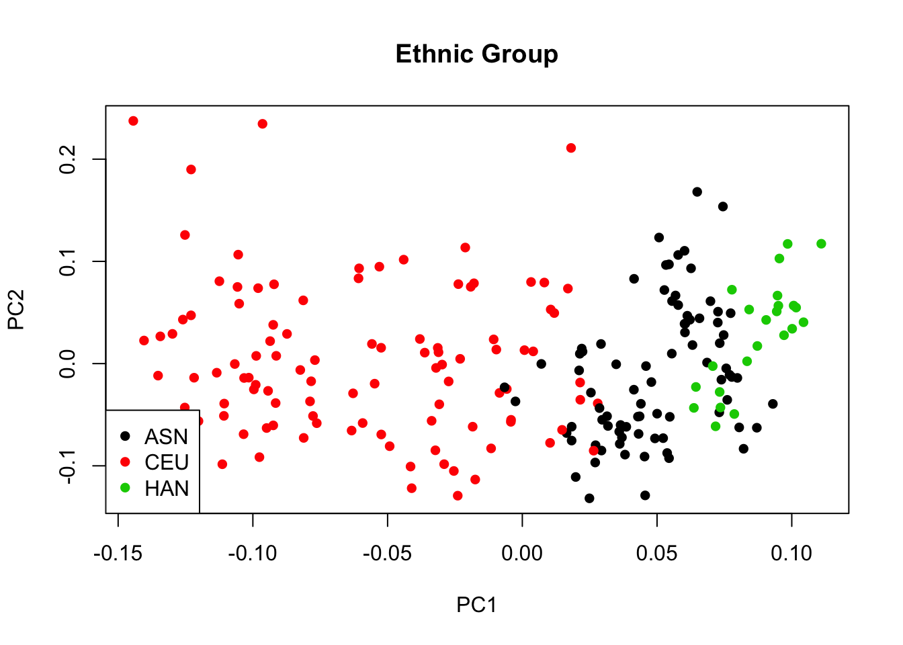
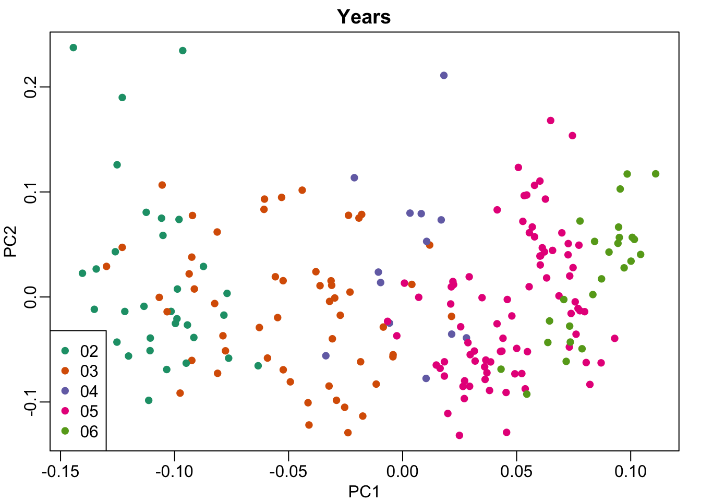

Last updated: 2018-06-20
workflowr checks: (Click a bullet for more information) ✖ R Markdown file: uncommitted changes
The R Markdown is untracked by Git. To know which version of the R Markdown file created these results, you’ll want to first commit it to the Git repo. If you’re still working on the analysis, you can ignore this warning. When you’re finished, you can run wflow_publish to commit the R Markdown file and build the HTML.
✔ Environment: empty
Great job! The global environment was empty. Objects defined in the global environment can affect the analysis in your R Markdown file in unknown ways. For reproduciblity it’s best to always run the code in an empty environment.
✔ Seed:
set.seed(20180620)
The command set.seed(20180620) was run prior to running the code in the R Markdown file. Setting a seed ensures that any results that rely on randomness, e.g. subsampling or permutations, are reproducible.
✔ Session information: recorded
Great job! Recording the operating system, R version, and package versions is critical for reproducibility.
✔ Repository version: e3c1067
wflow_publish or wflow_git_commit). workflowr only checks the R Markdown file, but you know if there are other scripts or data files that it depends on. Below is the status of the Git repository when the results were generated:
Ignored files:
Ignored: .DS_Store
Untracked files:
Untracked: analysis/batch-effect-part2.rmd
Unstaged changes:
Modified: analysis/index.Rmd
# source("http://bioconductor.org/biocLite.R")
# biocLite("Biobase")
# biocLite("genefilter")
# devtools::install_github("genomicsclass/GSE5859")
library(Biobase)Warning: package 'Biobase' was built under R version 3.4.2Loading required package: BiocGenericsWarning: package 'BiocGenerics' was built under R version 3.4.2Loading required package: parallel
Attaching package: 'BiocGenerics'The following objects are masked from 'package:parallel':
clusterApply, clusterApplyLB, clusterCall, clusterEvalQ,
clusterExport, clusterMap, parApply, parCapply, parLapply,
parLapplyLB, parRapply, parSapply, parSapplyLBThe following objects are masked from 'package:stats':
IQR, mad, sd, var, xtabsThe following objects are masked from 'package:base':
anyDuplicated, append, as.data.frame, cbind, colMeans,
colnames, colSums, do.call, duplicated, eval, evalq, Filter,
Find, get, grep, grepl, intersect, is.unsorted, lapply,
lengths, Map, mapply, match, mget, order, paste, pmax,
pmax.int, pmin, pmin.int, Position, rank, rbind, Reduce,
rowMeans, rownames, rowSums, sapply, setdiff, sort, table,
tapply, union, unique, unsplit, which, which.max, which.minWelcome to Bioconductor
Vignettes contain introductory material; view with
'browseVignettes()'. To cite Bioconductor, see
'citation("Biobase")', and for packages 'citation("pkgname")'.library(rafalib)
library(GSE5859)
library(genefilter)Warning: package 'genefilter' was built under R version 3.4.2data(GSE5859)# gene expression levels
geneExpression = exprs(e)# print date info
sampleInfo = pData(e)
head(sampleInfo$date)[1] "2003-02-04" "2003-02-04" "2002-12-17" "2003-01-30" "2003-01-03"
[6] "2003-01-16"Check years that the data from different ethnic groups were collected
# Print a table of year vs ethnic groups
year = factor( format(sampleInfo$date,"%y") )
tab = table(year,sampleInfo$ethnicity)
print(tab)
year ASN CEU HAN
02 0 32 0
03 0 54 0
04 0 13 0
05 80 3 0
06 2 0 24## One sample was provided twice in the dataset so we need to remove this redundant sample
cors <- cor(exprs(e))
Pairs=which(abs(cors)>0.9999,arr.ind=TRUE)
out = Pairs[which(Pairs[,1]<Pairs[,2]),,drop=FALSE]
if(length(out[,2])>0) e=e[,-out[2]]
## As in report 1, we remove control probes from the analysis.
out <- grep("AFFX",featureNames(e))
e <- e[-out,]
## We create a detrended gene expression data matrix and extract the information on dates and ethnic group
y <- exprs(e)-rowMeans(exprs(e))
dates <- pData(e)$date
eth <- pData(e)$ethnicitys <- svd(y)We first plot of PC1 and PC2 for ethnic groups 
We then plot PC1 and PC2 for years
sampleInfo = pData(e)
year = factor( format(sampleInfo$date,"%y") )
cols = as.numeric(year)
mypar()
plot(s$v[,1],s$v[,2],col=cols,pch=16, xlab="PC1",ylab="PC2")
legend("bottomleft",levels(year),col=seq(along=levels(year)),pch=16)
title("Years")
sessionInfo()R version 3.4.1 (2017-06-30)
Platform: x86_64-apple-darwin15.6.0 (64-bit)
Running under: macOS High Sierra 10.13.4
Matrix products: default
BLAS: /Library/Frameworks/R.framework/Versions/3.4/Resources/lib/libRblas.0.dylib
LAPACK: /Library/Frameworks/R.framework/Versions/3.4/Resources/lib/libRlapack.dylib
locale:
[1] en_US.UTF-8/en_US.UTF-8/en_US.UTF-8/C/en_US.UTF-8/en_US.UTF-8
attached base packages:
[1] parallel stats graphics grDevices utils datasets methods
[8] base
other attached packages:
[1] genefilter_1.60.0 GSE5859_1.0 rafalib_1.0.0
[4] Biobase_2.38.0 BiocGenerics_0.24.0
loaded via a namespace (and not attached):
[1] Rcpp_0.12.17 compiler_3.4.1 RColorBrewer_1.1-2
[4] git2r_0.21.0 workflowr_1.0.1 R.methodsS3_1.7.1
[7] R.utils_2.6.0 bitops_1.0-6 tools_3.4.1
[10] digest_0.6.15 bit_1.1-14 lattice_0.20-35
[13] annotate_1.56.2 evaluate_0.10.1 RSQLite_2.1.1
[16] memoise_1.1.0 Matrix_1.2-14 DBI_1.0.0
[19] yaml_2.1.19 stringr_1.3.1 knitr_1.20
[22] S4Vectors_0.16.0 IRanges_2.12.0 grid_3.4.1
[25] stats4_3.4.1 rprojroot_1.3-2 bit64_0.9-7
[28] AnnotationDbi_1.40.0 XML_3.98-1.11 survival_2.42-3
[31] rmarkdown_1.10 blob_1.1.1 magrittr_1.5
[34] whisker_0.3-2 splines_3.4.1 backports_1.1.2
[37] htmltools_0.3.6 xtable_1.8-2 stringi_1.2.3
[40] RCurl_1.95-4.10 R.oo_1.22.0 This reproducible R Markdown analysis was created with workflowr 1.0.1